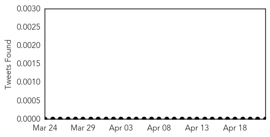
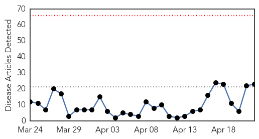
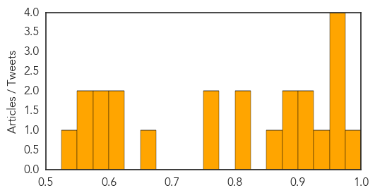

Meningitis
30-Day Web Trend
2 alerts, 0 warnings

30-Day Twitter Trend
0 alerts, 0 warnings

Article Locations

Article Confidences

Top Articles:
- 0.982
- Niger meningitis: Schools shut to curb outbreak
- 0.951
- Niger Closes Schools to Try to Stop Spread of Meningitis
- 0.943
- Niger: Niger Closes Schools to Try to Stop Spread of Meningitis
- 0.935
- Niger Closes Schools to Try to Stop Spread of Meningitis
- 0.929
- Niger closes schools after meningitis outbreak
- 0.925
- Niger: Schools shut to curb meningitis outbreak as death toll rises to 85
- 0.902
- UPDATE 1-Niger shuts schools and vaccinates children to fight meningitis outbreak
- 0.899
- New Jersey teacher diagnosed with viral meningitis
- 0.885
- Kaduna State Government Commissions Disease Control Centre
- 0.835
- St. Mary’s student diagnosed with meningitis
- 0.805
- St. Mary's College student hospitalized with case of meningitis - Story
- 0.772
- Saint Mary's College in Moraga takes precautions after meningitis scare
- 0.712
- Meningococcemia vaccinations reach over 10,000 students with first dose
- 0.646
- North Olmsted teacher diagnosed with viral meningitis, prompting calls to parents
- 0.637
- The most from the coast
- 0.603
- Patient, doctors' groups urge mandated meningitis vaccine
- 0.507
- South Amboy Teacher Comes Down With Viral Meningitis « CBS New York
- 0.505
- This newborn baby nearly died from meningococcal B.
- 0.500
- Blue Bell listeria outbreak may be five years old, CDC says
Top Tweets:
-
No tweets found for Apr 22, 2015
Measles
30-Day Web Trend
0 alerts, 0 warnings

30-Day Twitter Trend
0 alerts, 0 warnings

Article Locations

Article Confidences
Top Articles:
- 0.983
- The Black Death is back, and so are these other diseases you thought were gone
- 0.962
- Florida News Straight from the Source
- 0.961
- DOH Confirms Another Case Of Measles In Florida « CBS Miami
- 0.957
- Facts vs. myths
- 0.954
- Measles outbreak raises question of vaccine exemptions
- 0.948
- National Infant Immunization Week
- 0.917
- Sudan Vision Daily
- 0.908
- Connecting the World to Jewish News, Culture, and Opinion
- 0.898
- Study Finds No Autism, MMR Link
- 0.880
- Austria sees increase in cases of measles outbreaks
- 0.873
- Nearly 8 million children in Sudan to be immunized against measles following deadly outbreak – UNICEF - Sudan
- 0.823
- Autism, MMR vaccine link disproved yet again
- 0.808
- Florida health officials advise on measles prevention
- 0.771
- Yemen: UN warns of deteriorating health situation amid ongoing fighting
- 0.766
- Ohio was center of measles outbreak last year
- 0.669
- 'World Immunisation Week' from tomorrow
- 0.614
- Global vaccination targets ‘off-track’ warns WHO - World
- 0.603
- Even in kids stalked by autism risk, study fails to find vaccine link
- 0.596
- South Africa: MSF teams respond to health needs of displaced people in South Africa following xenophobic violence targeting foreign nationals
- 0.586
- No Autism, MMR Vaccine Link, New Study Finds
- 0.561
- Anti-measles campaign in trouble
- 0.559
- South Africa: MSF teams respond to health needs of displaced people in South Africa following xenophobic violence targeting foreign nationals - South Africa
- 0.541
- Global vaccination targets ‘off-track’ warns WHO
Top Tweets:
-
No tweets found for Apr 22, 2015